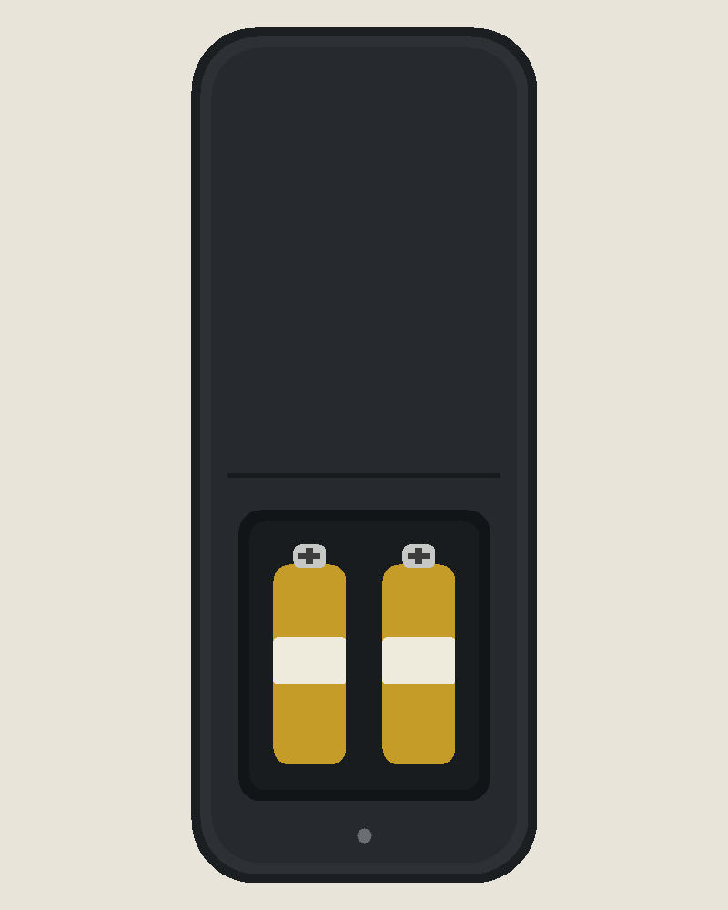

Design history seminar
Dieter Rams, attention, and the cost of taking things away.
02 · The promise
Rams's Braun years gave "less but better" a visual form: calm surfaces, few controls, a grid that holds.
03 · The counter-case
A door that needs a sign, a menu that hides the setting, a remote that asks the thumb to remember.
04 · The test
Not "does it look simple" — does every control earn its place, and can someone act without guessing?
05 · The cost of simplicity

Every added control is a decision pushed onto the person holding it.
06 · Close
What would you remove first — and what would break if you did?